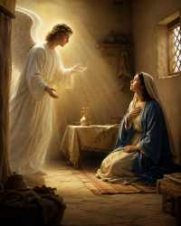
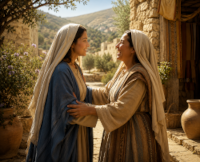
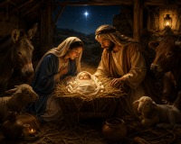
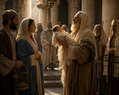
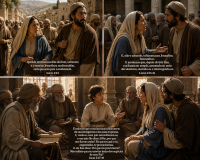

Mistérios gozosos
Os mistérios gozosos são o primeiro conjunto de cinco eventos bíblicos da vida de Jesus e Maria, meditados no Rosário católico, focados na alegria da Encarnação e infância de Cristo. Eles são rezados tradicionalmente às segundas-feiras e sábados, convidando à contemplação da humildade e esperança divina.
-
1º mistério: Anunciação do anjo a Maria; (Lucas 1,26-38)

-
2º mistério: Visitação de Maria a Santa Isabel; (Lucas 1, 39-45)

-
3º mistério: Nascimento do Menino Deus; (Lucas 2, 1-21)

-
4º mistério: Apresentação de Jesus no Templo; (Lucas 2, 22-35)

-
5º mistério: Perda e encontro de Jesus. (Lucas 2, 41-52)
